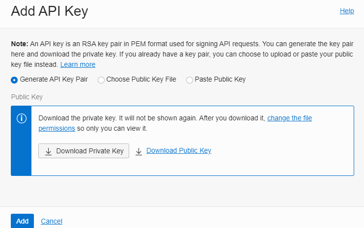
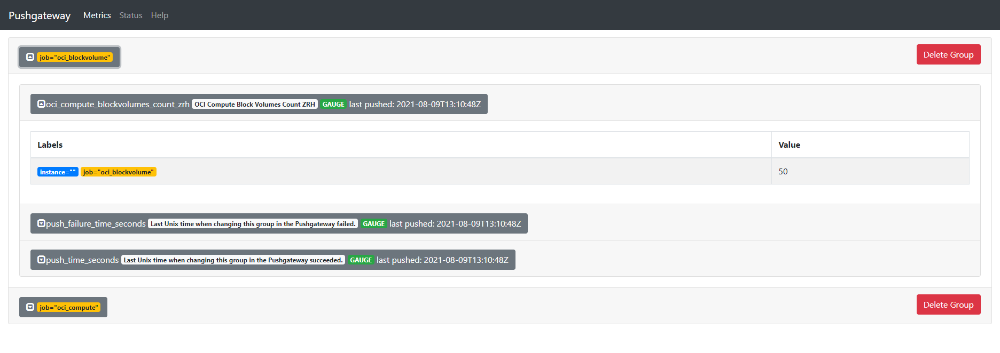

<div class="initial-content">
  <div id="main" role="main">

  <article class="page has-sidebar has-slides" itemscope itemtype="https://schema.org/CreativeWork">
    <meta itemprop="headline" content="Installation Guide for OCI Monitoring">
    
    <meta itemprop="datePublished" content="2021-11-18T09:42:00+00:00">
    


    <header>
      <h1 id="page-title" class="page__title" itemprop="headline">Installation Guide for OCI Monitoring
</h1>
      


    </header>

    <section class="page__content" itemprop="text">
      
        <!-- <aside class="sidebar__right sticky">
          <nav class="slides-nav"><ul><li class="active" data-target-slide="0"><a href="javascript:cool.slides.goToSlide(0)">Intro</a></li>
<li data-target-slide="1"><a href="javascript:cool.slides.goToSlide(1)">Prerequisites</a></li>
<li data-target-slide="2"><a href="javascript:cool.slides.goToSlide(2)">Steps</a></li>
<li data-target-slide="3"><a href="javascript:cool.slides.goToSlide(3)">OCI configuration</a></li>
<li data-target-slide="4"><a href="javascript:cool.slides.goToSlide(4)">How to create the user for OCI access using the OCI CLI</a></li>
<li data-target-slide="5"><a href="javascript:cool.slides.goToSlide(5)">Steampipe</a></li>
<li data-target-slide="6"><a href="javascript:cool.slides.goToSlide(6)">Python Example Scripts</a></li>
<li data-target-slide="7"><a href="javascript:cool.slides.goToSlide(7)">Prometheus Push Gateway</a></li>
<li data-target-slide="8"><a href="javascript:cool.slides.goToSlide(8)">Grafana</a></li>
<li data-target-slide="9"><a href="javascript:cool.slides.goToSlide(9)">Troubleshooting</a></li>
<li data-target-slide="10"><a href="javascript:cool.slides.goToSlide(10)">What's next</a></li></ul></nav>
        </aside> -->
      

        <div class="slides" id="slideshow">

  <div class="slide active" id="slide-0">

    <h2 class="slide__title"><span class="slide__num">1</span> Introduction</h2>

    <blockquote class="notice">
      <p><strong>Note:</strong> This is an experimental environment. Feel free to try it, extend it, but most importantly, have fun with it!</p>
    </blockquote>

    <p>In this walkthrough, you’ll install a basic Oracle Cloud Infrastructure (OCI) monitoring solution with these components based on Ansible in Oracle Linux 8.</p>

    <p><strong>The setup is tested for:</strong></p>

    <ul>
      <li>OL8 running in ESXi</li>
      <li>OL8 running in local VMware Workstation with NAT</li>
      <li>OL8 running in Oracle Cloud Infrastructure</li>
    </ul>

    <p><strong>Installed components by Ansible roles:</strong></p>

    <ul>
      <li>Docker</li>
      <li><a href="https://steampipe.io/">Steampipe</a></li>
      <li><a href="https://grafana.com/">Grafana</a></li>
      <li><a href="https://prometheus.io/">Prometheus</a></li>
      <li>Push Gateway</li>
      <li>PostgreSQL</li>
    </ul>

    <p><strong>How it works:</strong></p>

    <figure class="">
              <picture>
                  <source srcset="assets/oci-monitoring-architecture.png 1x" />
                  
              </picture>
              <figcaption>Architecture</figcaption>
            </figure>

    <ol>
      <li>Execute the Python script</li>
      <li>Steampipe gathers the information from Oracle Cloud Infrastructure</li>
      <li>The return value is pushed to Prometheus Push Gateway</li>
      <li>Prometheus scrapes the metrics from the gateway</li>
      <li>Grafana reads the metrics from Prometheus</li>
    </ol>

    <p><strong>For more information, see:</strong></p>

    <ul>
      <li><a href="https://docs.oracle.com/iaas/Content/GSG/Tasks/signingup.htm">Signing Up for Oracle Cloud Infrastructure</a></li>
      <li><a href="https://docs.oracle.com/en-us/iaas/Content/API/Concepts/cloudshellintro.htm">Getting started with OCI Cloud Shell</a></li>
      <li><a href="https://docs.oracle.com/en-us/iaas/Content/API/Concepts/cliconcepts.htm">OCI CLI</a></li>
    </ul>

    <div class="slide__nav"><a href="javascript:cool.slides.goToSlide(1)" class="slides__btn--begin">Begin &raquo;</a></div>

  </div>

  <div class="slide" id="slide-1">

    <h2 class="slide__title"><span class="slide__num">2</span> Prerequisites</h2>

    <ul>
      <li>root access by password</li>
      <li><code class="language-plaintext highlighter-rouge">/etc/hosts</code> configured</li>
      <li>Ansible and Git configured</li>
      <li>Internet access</li>
      <li>Oracle Cloud Infrastructure user with inspect permissions, including SSH PEM key and configuration</li>
    </ul>

    <h3 id="software-installation-ol8-esxi--ol8-vmware">Software installation: OL8 ESXi / OL8 VMware</h3>

    <p>As user <code class="language-plaintext highlighter-rouge">root</code>:</p>

    <div class="language-console highlighter-rouge"><div class="highlight"><pre class="highlight"><code><span class="go">yum -y install yum-utils
yum -y install oracle-epel-release-el8
yum-config-manager --enable ol8_developer_EPEL
yum -y install ansible git
</span></code></pre></div>    </div>

    <h3 id="software-installation-ol8-oracle-cloud-infrastructure">Software installation: OL8 Oracle Cloud Infrastructure</h3>

    <p>As user <code class="language-plaintext highlighter-rouge">opc</code>:</p>

    <div class="language-console highlighter-rouge"><div class="highlight"><pre class="highlight"><code><span class="go">sudo dnf upgrade
sudo dnf -y install oracle-epel-release-el8
sudo dnf config-manager --enable ol8_developer_EPEL
sudo dnf -y install ansible git
</span></code></pre></div>    </div>

    <h3 id="ansible-ssh-configuration-for-oracle-cloud-infrastructure">Ansible SSH configuration for Oracle Cloud Infrastructure</h3>

    <ul>
      <li>Upload the <code class="language-plaintext highlighter-rouge">opc</code>’s SSH private key to <code class="language-plaintext highlighter-rouge">/home/opc/.ssh</code> temporarily for installaton purposes</li>
      <li>
        <p>Change the Ansible checked out hosts file to:</p>

        <div class="language-console highlighter-rouge"><div class="highlight"><pre class="highlight"><code><span class="go">  [all:vars]
</span><span class="gp">  ansible_ssh_private_key_file=/home/opc/.ssh/&lt;your_ssh_key_file_name_here&gt;</span><span class="w">
</span><span class="go">
  [monitoring]
</span><span class="gp">  &lt;your_oci_compute_private_instance_here&gt;</span><span class="w"> </span><span class="nv">ansible_user</span><span class="o">=</span>opc <span class="nv">ansible_python_interpreter</span><span class="o">=</span><span class="s2">"/usr/bin/env python3"</span>
</code></pre></div>        </div>
      </li>
    </ul>

    <blockquote class="alert">
      <p>After the installation, it’s a good practice to remove the opc private key from your compute instance</p>
    </blockquote>

    <div class="slide__nav"><a href="javascript:cool.slides.goToSlide(0)">&laquo; Back</a> <a href="javascript:cool.slides.goToSlide(2)">Continue &raquo;</a></div>

  </div>

  <div class="slide" id="slide-2">

    <h2 class="slide__title"><span class="slide__num">3</span> Steps</h2>

    <ol>
      <li>Login to Oracle Linux 8 as <code class="language-plaintext highlighter-rouge">root</code></li>
      <li>Clone the repository to a local folder such as <code class="language-plaintext highlighter-rouge">/root/git</code></li>
      <li>Change to subdirectory <code class="language-plaintext highlighter-rouge">oci-monitoring</code></li>
      <li>Update the Ansible <code class="language-plaintext highlighter-rouge">hosts</code> file with your IP and root password. <code class="language-plaintext highlighter-rouge">ansible_ssh_pass</code> is required for local connections</li>
      <li>Run <code class="language-plaintext highlighter-rouge">ansible-galaxy collection install -r roles/requirements.yml</code></li>
      <li>Run <code class="language-plaintext highlighter-rouge">ansible-playbook install.yml</code></li>
      <li>
        <p>As <code class="language-plaintext highlighter-rouge">root</code>, verify that all Docker containers are running:</p>

        <div class="language-console highlighter-rouge"><div class="highlight"><pre class="highlight"><code><span class="go">   docker ps
</span></code></pre></div>        </div>

        <p>Your output should be something like:</p>

        <div class="language-console highlighter-rouge"><div class="highlight"><pre class="highlight"><code><span class="go">   CONTAINER ID   IMAGE              COMMAND                  CREATED             STATUS             PORTS                    NAMES
</span><span class="gp">   f7f2e137f4a1   prom/pushgateway   "/bin/pushgateway"       About an hour ago   Up About an hour   0.0.0.0:9091-&gt;</span>9091/tcp   pushgateway
<span class="gp">   c6ecc72065c9   prom/prometheus    "/bin/prometheus --c…"   About an hour ago   Up About an hour   0.0.0.0:9090-&gt;</span>9090/tcp   prometheus
<span class="gp">   3485de8cc1f9   grafana/grafana    "/run.sh"                About an hour ago   Up About an hour   0.0.0.0:3000-&gt;</span>3000/tcp   grafana
<span class="gp">   8e821aa0044b   turbot/steampipe   "docker-entrypoint.s…"   About an hour ago   Up 30 minutes      0.0.0.0:9193-&gt;</span>9193/tcp   steampipe
</code></pre></div>        </div>
      </li>
    </ol>

    <h3 id="network-security">Network security</h3>

    <p>The Ansible playbooks also open these ports in the VM for troubleshooting access:</p>

    <ul>
      <li>3000: Grafana</li>
      <li>9090: Prometheus</li>
      <li>9091: Prometheus Push Gateway</li>
      <li>9093: Steampipe Service</li>
    </ul>

    <div class="slide__nav"><a href="javascript:cool.slides.goToSlide(1)">&laquo; Back</a> <a href="javascript:cool.slides.goToSlide(3)">Continue &raquo;</a></div>

  </div>

  <div class="slide" id="slide-3">

    <h2 class="slide__title"><span class="slide__num">4</span> OCI configuration</h2>

    <ol>
      <li>After the successful Ansible execution, put your personal OCI configuration and SSH key into the directory <code class="language-plaintext highlighter-rouge">/home/steampipe/.oci</code>.</li>
      <li>Replace the dummy values.</li>
      <li>
        <p>Update the file <code class="language-plaintext highlighter-rouge">/home/steampipe/config/oci.spc</code> with the correct SSH key file name:</p>

        <blockquote class="notice">
          <p><strong>Note:</strong> Take care that both the owner and group of the OCI configuration file is <code class="language-plaintext highlighter-rouge">steampipe</code></p>
        </blockquote>

        <p>Example:</p>

        <ol>
          <li>
            <p>Check the current directory:</p>

            <div class="language-console highlighter-rouge"><div class="highlight"><pre class="highlight"><code><span class="go">   pwd
</span></code></pre></div>            </div>

            <p>Your output should be:</p>

            <div class="language-console highlighter-rouge"><div class="highlight"><pre class="highlight"><code><span class="go">   /home/steampipe/.oci
</span></code></pre></div>            </div>
          </li>
          <li>
            <p>Verify contents of the directory:</p>

            <div class="language-console highlighter-rouge"><div class="highlight"><pre class="highlight"><code><span class="go">   ls -l
</span></code></pre></div>            </div>

            <p>Your output should be something like:</p>

            <div class="language-console highlighter-rouge"><div class="highlight"><pre class="highlight"><code><span class="go">   total 8
   -rw-r--r--. 1 steampipe steampipe  307 Aug  9 09:01 config
   -rw-r--r--. 1 steampipe steampipe 1730 Aug  9 09:01 jurasuedfuss-20210809.pem
</span></code></pre></div>            </div>
          </li>
        </ol>
      </li>
      <li>
        <p>Restart the Docker container for Steampipe:</p>

        <div class="language-console highlighter-rouge"><div class="highlight"><pre class="highlight"><code><span class="go">   docker stop steampipe
   docker start steampipe
</span></code></pre></div>        </div>
      </li>
    </ol>

    <div class="slide__nav"><a href="javascript:cool.slides.goToSlide(2)">&laquo; Back</a> <a href="javascript:cool.slides.goToSlide(4)">Continue &raquo;</a></div>

  </div>

  <div class="slide" id="slide-4">

    <h2 class="slide__title"><span class="slide__num">5</span> How to create the user for OCI access using the OCI CLI</h2>

    <p>Next we’ll create an <code class="language-plaintext highlighter-rouge">OCI</code> user for monitoring.  For use in this section:</p>

    <ul>
      <li>An existing OCI CLI setup for an tenant administrator is required to execute these steps.</li>
      <li>The required SSH key in PEM format can be downloaded from the OCI web interface.</li>
      <li>The <code class="language-plaintext highlighter-rouge">user</code>, <code class="language-plaintext highlighter-rouge">group</code>, and <code class="language-plaintext highlighter-rouge">policy</code> can be created inthe web interface as well.</li>
    </ul>

    <p>Now, all we need for Steampipe is the OCI config file for the new user and their SSH key in PEM format.</p>

    <h3 id="create-user">Create User</h3>

    <div class="language-console highlighter-rouge"><div class="highlight"><pre class="highlight"><code><span class="go">oci iam user create --name oci_user_readonly --description "OCI User with inspect all-resources."
</span></code></pre></div>    </div>

    <h3 id="create-group">Create Group</h3>

    <div class="language-console highlighter-rouge"><div class="highlight"><pre class="highlight"><code><span class="go">oci iam group create --name oci_group_readonly --description "OCI Group with inspect all-resources."
</span></code></pre></div>    </div>

    <h3 id="add-user-to-group">Add User to Group</h3>

    <div class="language-console highlighter-rouge"><div class="highlight"><pre class="highlight"><code><span class="gp">$</span><span class="w"> </span>oci iam group add-user <span class="se">\</span>
<span class="gp">--user-id &lt;your user OCID from created user above&gt;</span><span class="w"> </span><span class="se">\</span>
<span class="gp">--group-id &lt;your group OCID from created group above&gt;</span><span class="w">
</span></code></pre></div>    </div>

    <h3 id="create-policy">Create Policy</h3>

    <div class="language-console highlighter-rouge"><div class="highlight"><pre class="highlight"><code><span class="gp">$</span><span class="w"> </span>oci iam policy create <span class="se">\</span>
<span class="gp">--compartment-id &lt;your tenancy OCID&gt;</span><span class="w"> </span><span class="se">\</span>
<span class="go">--name oci_policy_readonly \
--description "OCI Policy with inspect all-resources." \
--statements '[ "allow group oci_group_readonly to inspect all-resources on tenancy" ]'
</span></code></pre></div>    </div>

    <h3 id="add-api-key">Add API Key</h3>

    <ol>
      <li>
        <p>Add your API key:</p>

        <picture class="">
             <source srcset="assets/oci-monitoring-api-key.png 1x" />
             
         </picture>
      </li>
      <li>
        <p>Download the created private key in PEM format:</p>

        <picture class="">
             <source srcset="assets/oci-monitoring-add-api-key.png 1x" />
             
         </picture>
      </li>
      <li>
        <p>Copy the configuration file preview.<br />
The values are used for the Steampipe OCI configuration.</p>

        <picture class="">
             <source srcset="assets/oci-monitoring-config-file-prev.png 1x" />
             
         </picture>
      </li>
    </ol>

    <div class="slide__nav"><a href="javascript:cool.slides.goToSlide(3)">&laquo; Back</a> <a href="javascript:cool.slides.goToSlide(5)">Continue &raquo;</a></div>

  </div>

  <div class="slide" id="slide-5">

    <h2 class="slide__title"><span class="slide__num">6</span> Steampipe</h2>

    <h3 id="oci-regions">OCI Regions</h3>

    <p>To filter your regions, just edit the file <code class="language-plaintext highlighter-rouge">/home/steampipe/config/oci.spc</code>.</p>

    <p>For example:</p>

    <div class="language-json highlighter-rouge"><div class="highlight"><pre class="highlight"><code><span class="err">connection</span><span class="w"> </span><span class="s2">"oci_tenant_kestenholz"</span><span class="w"> </span><span class="p">{</span><span class="w">
  </span><span class="err">plugin</span><span class="w">                </span><span class="err">=</span><span class="w"> </span><span class="s2">"oci"</span><span class="w">
  </span><span class="err">config_file_profile</span><span class="w">   </span><span class="err">=</span><span class="w"> </span><span class="s2">"DEFAULT"</span><span class="w">          </span><span class="err">#</span><span class="w"> </span><span class="err">Name</span><span class="w"> </span><span class="err">of</span><span class="w"> </span><span class="err">the</span><span class="w"> </span><span class="err">profile</span><span class="w">
  </span><span class="err">config_path</span><span class="w">           </span><span class="err">=</span><span class="w"> </span><span class="s2">"~/.oci/config"</span><span class="w">    </span><span class="err">#</span><span class="w"> </span><span class="err">Path</span><span class="w"> </span><span class="err">to</span><span class="w"> </span><span class="err">config</span><span class="w"> </span><span class="err">file</span><span class="w">
  </span><span class="err">regions</span><span class="w">               </span><span class="err">=</span><span class="w"> </span><span class="p">[</span><span class="s2">"eu-frankfurt-1"</span><span class="w"> </span><span class="p">,</span><span class="w"> </span><span class="s2">"eu-zurich-1"</span><span class="p">]</span><span class="w"> </span><span class="err">#</span><span class="w"> </span><span class="err">List</span><span class="w"> </span><span class="err">of</span><span class="w"> </span><span class="err">regions</span><span class="w">
</span><span class="p">}</span><span class="w">
</span></code></pre></div>    </div>

    <h4 id="test-steampipe">Test Steampipe</h4>

    <p>Here are some commands to verify if Steampipe is working as expected:</p>

    <blockquote class="notice">
      <p><strong>Note:</strong> All commands need to be executed as <strong><code class="language-plaintext highlighter-rouge">root</code></strong>.</p>
    </blockquote>

    <ul>
      <li>
        <p><strong>list plugins</strong></p>

        <div class="language-console highlighter-rouge"><div class="highlight"><pre class="highlight"><code><span class="go">  docker exec -it steampipe steampipe plugin list
</span></code></pre></div>        </div>

        <p>Your output should look something like:</p>

        <div class="language-console highlighter-rouge"><div class="highlight"><pre class="highlight"><code><span class="go">  +--------------------------------------------+---------+-----------------------+
  | Name                                       | Version | Connections           |
  +--------------------------------------------+---------+-----------------------+
  | hub.steampipe.io/plugins/turbot/oci@latest | 0.1.0   | oci_tenant_kestenholz |
  +--------------------------------------------+---------+-----------------------+
</span></code></pre></div>        </div>
      </li>
      <li>
        <p><strong>confirm <code class="language-plaintext highlighter-rouge">RUNNING</code> state</strong></p>

        <div class="language-console highlighter-rouge"><div class="highlight"><pre class="highlight"><code><span class="go">  docker exec -it steampipe steampipe \
</span><span class="gp">  query "select display_name,shape,region from oci_core_instance where lifecycle_state='RUNNING';</span><span class="s2">"
</span></code></pre></div>        </div>

        <p>Your output should look something like:</p>

        <div class="language-console highlighter-rouge"><div class="highlight"><pre class="highlight"><code><span class="go">  +-----------------------------------+------------------------+----------------+
  | display_name                      | shape                  | region         |
  +-----------------------------------+------------------------+----------------+
  | Instance-DB-1                     | VM.Standard1.2         | eu-frankfurt-1 |
  | Instance-AS-1                     | VM.Standard1.1         | eu-frankfurt-1 |
  +-----------------------------------+------------------------+----------------+
</span></code></pre></div>        </div>
      </li>
      <li>
        <p><strong>confirm home region</strong></p>

        <div class="language-console highlighter-rouge"><div class="highlight"><pre class="highlight"><code><span class="go">  docker exec -it steampipe steampipe \
</span><span class="gp">  query "select key,title,status from oci_region where is_home_region=true;</span><span class="s2">"
</span></code></pre></div>        </div>

        <p>Your output should look something like:</p>

        <div class="language-console highlighter-rouge"><div class="highlight"><pre class="highlight"><code><span class="go">  +-----+----------------+--------+
  | key | title          | status |
  +-----+----------------+--------+
  | FRA | eu-frankfurt-1 | READY  |
  +-----+----------------+--------+
</span></code></pre></div>        </div>
      </li>
    </ul>

    <div class="slide__nav"><a href="javascript:cool.slides.goToSlide(4)">&laquo; Back</a> <a href="javascript:cool.slides.goToSlide(6)">Continue &raquo;</a></div>

  </div>

  <div class="slide" id="slide-6">

    <h2 class="slide__title"><span class="slide__num">7</span> Python Example Scripts</h2>

    <p>In the subdirectory <code class="language-plaintext highlighter-rouge">/home/steampipe/py</code>, there are two basic examples of how to get the data from the Steampipe PostgreSQL service to Python3. Feel free to adapt the queries and files as needed. Also, keep in mind that the returned values are pushed to the Prometheus Gateway on <code class="language-plaintext highlighter-rouge">port 9091</code> for further usage.</p>

    <table>
      <thead>
        <tr>
          <th>Script</th>
          <th>Purpose</th>
        </tr>
      </thead>
      <tbody>
        <tr>
          <td>pgsql-query-bv-zurich.py</td>
          <td>Summary of Block Volume in OCI Region Zurich</td>
        </tr>
        <tr>
          <td>pgsql-query-ci-running-zurich.py</td>
          <td>Summary of running Instances in OCI Region Zurich</td>
        </tr>
      </tbody>
    </table>

    <blockquote class="alert">
      <p>Currently, you’ll need to restart the Docker container <em>before</em> executing Python3 according to the error generated by running these scripts.  In future iterations, we hope to have a solution, but right now this is an easy fix!</p>
    </blockquote>

    <ol>
      <li>
        <p>Manual execution and upload of the query result:</p>

        <div class="language-console highlighter-rouge"><div class="highlight"><pre class="highlight"><code><span class="go">   python3 pgsql-query-ci-running-zurich.py
   python3 pgsql-query-bv-zurich.py
</span></code></pre></div>        </div>

        <p>These will return the error noted above:</p>

        <div class="language-console highlighter-rouge"><div class="highlight"><pre class="highlight"><code><span class="go">   Something went wrong: no connection config loaded for connection 'oci'
</span></code></pre></div>        </div>
      </li>
      <li>
        <p>Restarting Steampipe as <code class="language-plaintext highlighter-rouge">root</code>:</p>

        <div class="language-console highlighter-rouge"><div class="highlight"><pre class="highlight"><code><span class="go">   docker stop steampipe
   docker start steampipe
</span></code></pre></div>        </div>
      </li>
    </ol>

    <div class="slide__nav"><a href="javascript:cool.slides.goToSlide(5)">&laquo; Back</a> <a href="javascript:cool.slides.goToSlide(7)">Continue &raquo;</a></div>

  </div>

  <div class="slide" id="slide-7">

    <h2 class="slide__title"><span class="slide__num">8</span> Prometheus Push Gateway</h2>

    <p>According to the Python script, new data is passed to the <strong>Prometheus Push Gateway</strong> on <code class="language-plaintext highlighter-rouge">port 9091</code> and scraped by Prometheus <code class="language-plaintext highlighter-rouge">port 9090</code>.</p>

    <p>Check out this example for the Prometheus Gateway where data is loaded by jobs <code class="language-plaintext highlighter-rouge">oci_blockvolume_</code> and <code class="language-plaintext highlighter-rouge">_oci_compute</code>:</p>

    <picture class="">
                <source srcset="assets/oci-monitoring-pushgateway.png 1x" />
                
            </picture>

    <div class="slide__nav"><a href="javascript:cool.slides.goToSlide(6)">&laquo; Back</a> <a href="javascript:cool.slides.goToSlide(8)">Continue &raquo;</a></div>

  </div>

  <div class="slide" id="slide-8">

    <h2 class="slide__title"><span class="slide__num">9</span> Grafana</h2>

    <p>Grafana is reachable by address on <code class="language-plaintext highlighter-rouge">port 3000</code> of your machine (e.g.,  <code class="language-plaintext highlighter-rouge">your-machine-ip:3000</code>).</p>

    <p>The default login and password is:</p>

    <ul>
      <li>Username: <code class="language-plaintext highlighter-rouge">admin</code></li>
      <li>Password: <code class="language-plaintext highlighter-rouge">welcome1</code></li>
    </ul>

    <p>The Prometheus data source and a basic dashboard are deployed during the Grafana Docker setup process.</p>

    <ul>
      <li>
        <p>Here’s an example for dashboard <strong>OCI Demo - eu-zurich-1</strong>:</p>

        <figure class="">
            <picture>
                <source srcset="assets/oci-monitoring-grafana.png 1x" />
                
            </picture>
            <figcaption>Prometheus data source</figcaption>
          </figure>

        <figure class="">
            <picture>
                <source srcset="assets/oci-monitoring-grafana-demo.png 1x" />
                
            </picture>
            <figcaption>Sample dashboard OCI Demo</figcaption>
          </figure>
      </li>
      <li>
        <p>And here you can see the pushed metric from the Python script by name:</p>

        <picture class="">
              <source srcset="assets/oci-monitoring-grafana-metrics-browser.png 1x" />
              
          </picture>
      </li>
    </ul>

    <div class="slide__nav"><a href="javascript:cool.slides.goToSlide(7)">&laquo; Back</a> <a href="javascript:cool.slides.goToSlide(9)">Continue &raquo;</a></div>

  </div>

  <div class="slide" id="slide-9">

    <h2 class="slide__title"><span class="slide__num">10</span> Troubleshooting</h2>

    <h3 id="docker-logs">Docker Logs</h3>

    <p>To verify that Steampipe is running properly:</p>

    <div class="language-console highlighter-rouge"><div class="highlight"><pre class="highlight"><code><span class="go">docker logs steampipe
</span></code></pre></div>    </div>

    <h3 id="steampipe-access-logs">Steampipe Access Logs</h3>

    <p>The foreign data wrapper logs are stored locally (<em>not</em> in the Docker container) in the directory <code class="language-plaintext highlighter-rouge">/home/steampipe/logs</code>:</p>

    <div class="language-console highlighter-rouge"><div class="highlight"><pre class="highlight"><code><span class="go">drwx------. 11 steampipe steampipe     173 Aug  9 17:18 ..
-rw-------.  1      9193 root       756701 Aug  9 19:57 database-2021-08-09.log
drwxrwxr-x.  2 steampipe root           68 Aug 10 02:00 .
-rw-------.  1      9193 root      3411203 Aug 10 07:19 database-2021-08-10.log
</span></code></pre></div>    </div>

    <div class="slide__nav"><a href="javascript:cool.slides.goToSlide(8)">&laquo; Back</a> <a href="javascript:cool.slides.goToSlide(10)">Continue &raquo;</a></div>

  </div>

  <div class="slide" id="slide-10">

    <h2 class="slide__title"><span class="slide__num">11</span> What's next</h2>

    <p>At this point, you should have your OCI monitoring solution up and running. Feel free to continue extending and exploring its capabilities!</p>

    <p>For more information about development with Oracle products, see:</p>

    <ul>
      <li><a href="https://developer.oracle.com/">Oracle Developers Portal</a></li>
      <li><a href="https://www.oracle.com/cloud/">Oracle Cloud Infrastructure</a></li>
    </ul>

    <div class="slide__nav"><a href="javascript:cool.slides.goToSlide(9)">&laquo; Back</a></div>

  </div>

</div>

<!--- links -->


          <div class="sidebar sticky">
    <!-- <p><strong>Tags:</strong> <span class="tags">

            
            <a class="animated-link tag" href="/topics/ansible">ansible</a>
            <a class="animated-link tag" href="/topics/data-visualization">data-visualization</a>
            <a class="animated-link tag" href="/topics/data-management">data-management</a>
            <a class="animated-link tag" href="/topics/back-end">back-end</a>
            </span>
    </p> -->
  


<div itemscope itemtype="https://schema.org/Person">

  

  <div class="author__content">
    
      <h3 class="author__name" itemprop="name">Martin Berger</h3>
    
    
  </div>

  <div class="author__urls-wrapper">
    <ul class="author__urls social-icons">
      

      

      

      

      

      

      

      

      

      

      

      

      
        <li>
          <a href="https://github.com/martinberger-ch" itemprop="sameAs" rel="nofollow noopener noreferrer">
            <i class="fab fa-fw fa-github" aria-hidden="true"></i><span class="label">GitHub</span>
          </a>
        </li>
      

      

      

      

      

      

      

      

      

      

      

      

      

      

      
    </ul>
  </div>
</div>

  
  
  

  </div>


      </section>

      <footer class="page__meta">
        
        


        

  <p class="page__date"><strong><i class="fas fa-fw fa-calendar-alt" aria-hidden="true"></i> Updated:</strong> <time datetime="2021-11-18T09:42:00+00:00">November 18, 2021</time></p>


      </footer>
    </div>

  </article>
</div>

</div>

